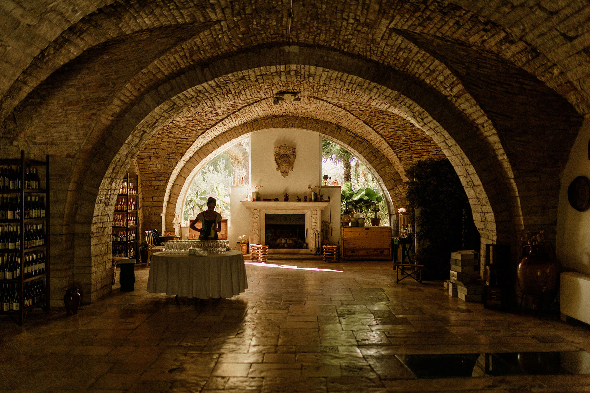
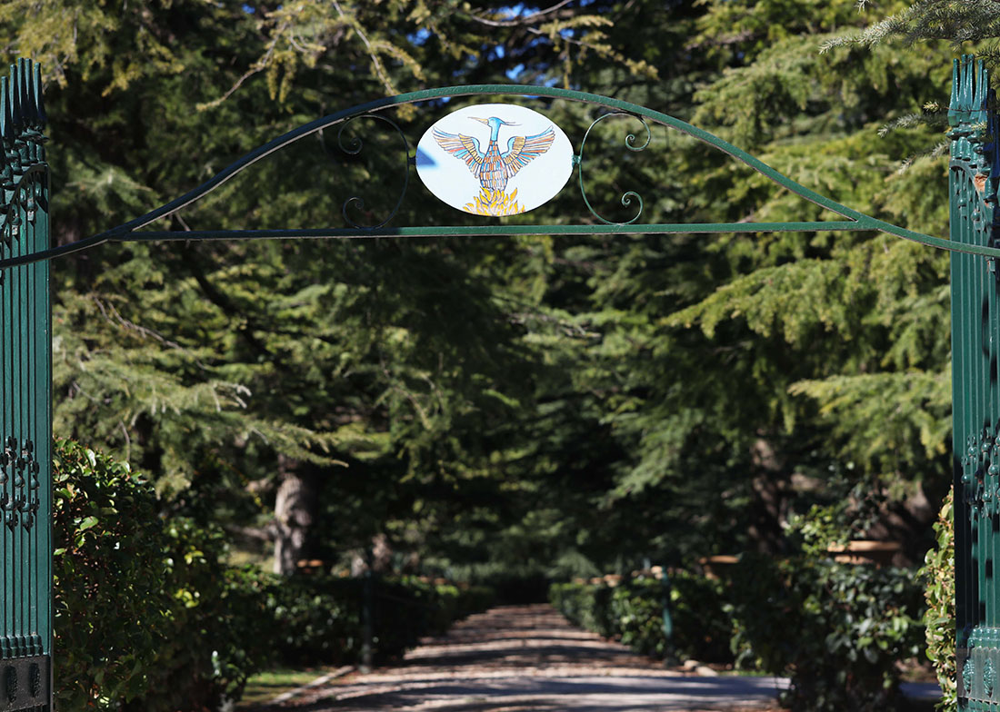
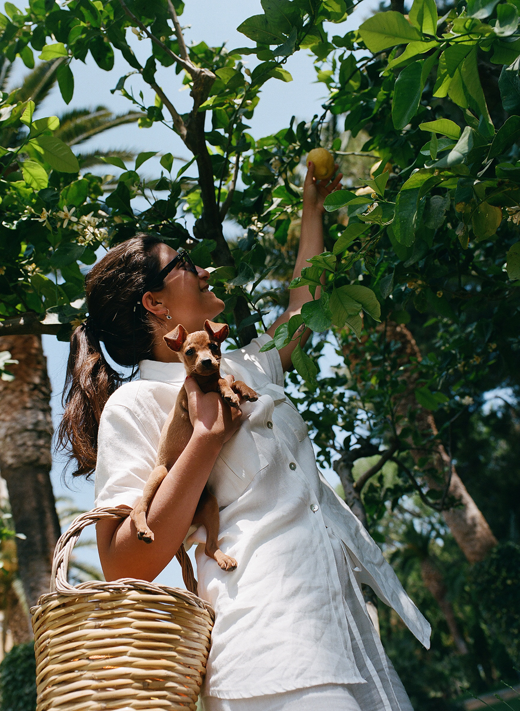
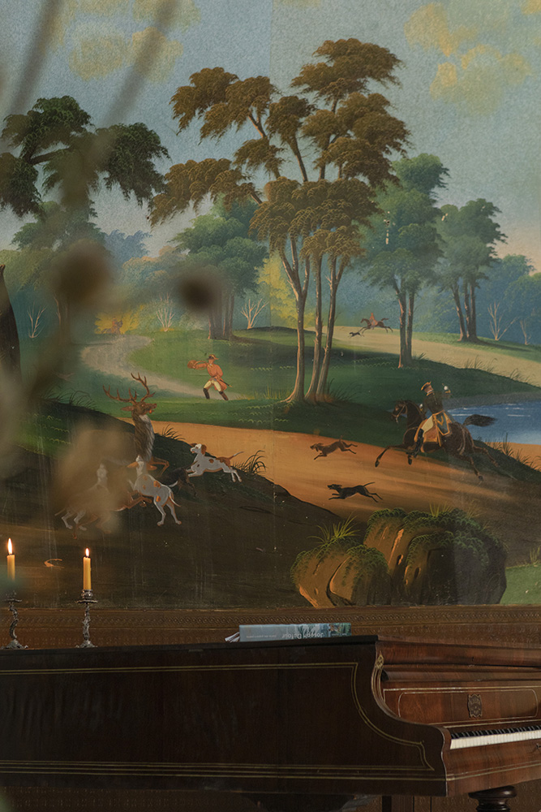
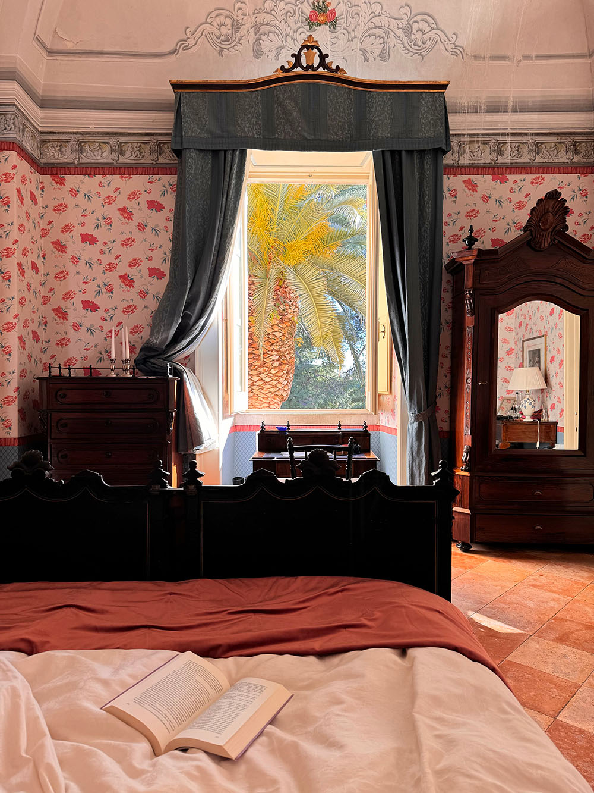
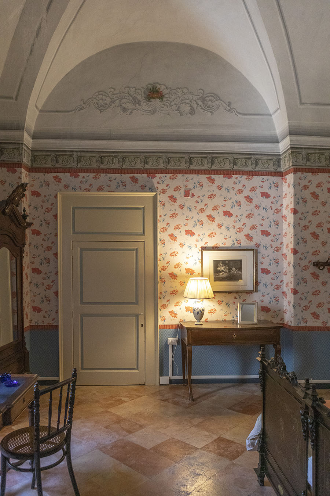

I luoghi Location
Dal parco e il giardino, la natura entra nelle sale della Villa nel verde degli affreschi originali del ‘800. Ogni luogo si distingue per la sua storia, nel legame indissolubile con il territorio, da cui ricaviamo tutti i frutti della produzione agricola di famiglia.
L’abitazione, che accoglie gli ospiti nello stile classico degli arredi, dispone di ogni comfort necessario per un’esperienza unica. Il salone per pranzi e cene rievoca le radici più antiche, con le sue volte e il mascherone di epoca romana. A circondare il tutto, il grande parco ed il giardino, cuore pulsante della Villa. Da qui, i colori di piante esotiche e alberi secolari si fondono con i temi pittorici delle sale. From the park and the garden, nature enters the rooms of the Villa through the green of the original 1800 frescos. Each place is characterized by its own history, in an unbreakable bond with the land from which we get all the products of our family farm.
The Residence welcomes our guests in the classic style of the furniture. It has every comfort necessary for a unique experience. The Three Halls for lunches and dinners evokes the most ancient roots, with its vaults and the ancient Roman stone mask. Surrounding the whole, the large park and the garden, beating heart of the Villa. From here, the colours of exotic plants and secular trees blend with the pictorial themes of the rooms.
L’abitazione, che accoglie gli ospiti nello stile classico degli arredi, dispone di ogni comfort necessario per un’esperienza unica. Il salone per pranzi e cene rievoca le radici più antiche, con le sue volte e il mascherone di epoca romana. A circondare il tutto, il grande parco ed il giardino, cuore pulsante della Villa. Da qui, i colori di piante esotiche e alberi secolari si fondono con i temi pittorici delle sale. From the park and the garden, nature enters the rooms of the Villa through the green of the original 1800 frescos. Each place is characterized by its own history, in an unbreakable bond with the land from which we get all the products of our family farm.
The Residence welcomes our guests in the classic style of the furniture. It has every comfort necessary for a unique experience. The Three Halls for lunches and dinners evokes the most ancient roots, with its vaults and the ancient Roman stone mask. Surrounding the whole, the large park and the garden, beating heart of the Villa. From here, the colours of exotic plants and secular trees blend with the pictorial themes of the rooms.
Il Giardino e il Parco Garden and Park
Il viale di cedri Deodara del Libano, piantati nella proprietà ancora prima del restauro, accoglie gli ospiti nella Villa, facendoli immergere in un ecosistema unico a metà tra la brezza del mare adriatico e il parco della murgia.
La Villa si scopre dietro i pini d’aleppo, avvolta dai colori e profumi di siepi d’alloro e piante di agrumi. Feste, pranzi e giochi si svolgono nell’uliveto, sotto il pergolato di rose o sull’altalena e le amache del giardino. Il verde si perde nel parco di querce vallonee secolari, cosparso delle pietre calcaree della Murgia che sono state oggetto di studio per la loro unicità.
Oltre le sue bellezze, il parco è parte fondamentale della produzione agricola della famiglia Fenicia. La Villa è infatti circondata da oltre 30 ettari di uliveto, varietà “cultivar coratina”, da cui viene ricavato l’olio. L’orto produce stagionalmente una ricca varietà di ortaggi curati personalmente dalla famiglia, mentre il vigneto autoctono di oltre 3 ettari regala ogni anno la sua uva “Nero di Troia”. The avenue of Lebanon’s Deodara cedars, planted here even before the restoration, welcomes guests in the Villa, immersing them in a unique ecosystem halfway between the breeze of the Adriatic Sea and the park of the Murgia.
The Villa unveils itself from behind the Aleppo pines, surrounded by the colours and scents of laurel hedges and citrus plants. Parties, lunches and games are held in the olive grove, under the pergola of roses or on the swing and the hammocks in the garden. The green goes on in the park of centuries-old vallonee oaks, sprinkled with the limestone stones of the Murgia, subjects of studies because of their uniqueness.
Besides its beauty, the park is a fundamental part of the agricultural production of the Fenicia family. The Villa, in fact, is surrounded by over 30 hectares of olive grove, variety "cultivar coratina", from which we get our oil. The vegetable garden produces seasonally a rich variety of vegetables, personally cared for by the family, while the autochthonous vineyard of over 3 hectares produces every year its grape "Nero di Troia".
La Villa si scopre dietro i pini d’aleppo, avvolta dai colori e profumi di siepi d’alloro e piante di agrumi. Feste, pranzi e giochi si svolgono nell’uliveto, sotto il pergolato di rose o sull’altalena e le amache del giardino. Il verde si perde nel parco di querce vallonee secolari, cosparso delle pietre calcaree della Murgia che sono state oggetto di studio per la loro unicità.
Oltre le sue bellezze, il parco è parte fondamentale della produzione agricola della famiglia Fenicia. La Villa è infatti circondata da oltre 30 ettari di uliveto, varietà “cultivar coratina”, da cui viene ricavato l’olio. L’orto produce stagionalmente una ricca varietà di ortaggi curati personalmente dalla famiglia, mentre il vigneto autoctono di oltre 3 ettari regala ogni anno la sua uva “Nero di Troia”. The avenue of Lebanon’s Deodara cedars, planted here even before the restoration, welcomes guests in the Villa, immersing them in a unique ecosystem halfway between the breeze of the Adriatic Sea and the park of the Murgia.
The Villa unveils itself from behind the Aleppo pines, surrounded by the colours and scents of laurel hedges and citrus plants. Parties, lunches and games are held in the olive grove, under the pergola of roses or on the swing and the hammocks in the garden. The green goes on in the park of centuries-old vallonee oaks, sprinkled with the limestone stones of the Murgia, subjects of studies because of their uniqueness.
Besides its beauty, the park is a fundamental part of the agricultural production of the Fenicia family. The Villa, in fact, is surrounded by over 30 hectares of olive grove, variety "cultivar coratina", from which we get our oil. The vegetable garden produces seasonally a rich variety of vegetables, personally cared for by the family, while the autochthonous vineyard of over 3 hectares produces every year its grape "Nero di Troia".

1/4

2/4
 3/4
3/4
 4/4
4/4
(02)Il salone d'ingresso Entrance Hall
Piano terra Ground floor
1/3
 2/3
2/3

3/3
1/3
Salone d'ingresso Entrance Hall
Realizzato nel 1870 durante il restauro dell’architetto De Judicibus, l’ingresso della Villa si presenta agli ospiti immacolato. Le pareti sono realizzate secondo la tecnica francese del papier peints. La sensazione, ammirandolo, è di armonia tra la natura dipinta con quella che circonda la Villa. È una sala di ricordi e cimeli sospesa nel tempo.
Built in 1870 during architect De Judicibus’ restoration, the entrance of the Villa is immaculate. The walls are made according to the French technique of papier peints. Admiring it, the feeling of harmony between the painted nature with that surrounding the Villa is vivid. It is a room of memories and memorabilia suspended in time.
La Residenza The Residence
L’esclusiva Residenza accoglie gli ospiti nelle quattro suite, offrendo loro la possibilità di immergersi in spazi dagli affreschi e arredamenti unici. Gli ospiti possono godere del grande Salone di Gala, il Soggiorno, la Sala da Pranzo, l’ampio terrazzo e della nuova piscina.
The exclusive Residence welcomes the guests in four suites, offering everyone the opportunity to immerse themselves in spaces with frescoes and unique furnishings. Guests can enjoy the large Gala Hall, the Living Room, the Dining Hall, the large terrace and the new swimming pool.
 1/6
1/6

2/6
 3/6
3/6
 4/6
4/6
 5/6
5/6
 6/6
6/6
 1/4
1/4

2/4
 3/4
3/4
4/4
1/4
Le tre sale The Three Halls
I tre archi in pietra racchiudono la Sala delle Antiche Stalle con i suoi pavimenti in chianca di Trani, il grande camino ed il mascherone romano a vista. Questo è il cuore della convivialità della Villa, dove è anche possibile incontrare, tra le volte antiche, i fratelli Montaruli alle prese con i fornelli della cucina-laboratorio di Mezza Pagnotta.
Collegato attraverso il lungo bersò introdotto dall’albero di alloro secolare, il Giardino di Inverno accoglie gli ospiti nella suggestione delle vetrate da cui è possibile accedere all’uliveto.
Grazie al recente ammodernamento di ciascuna delle tre sale, oggi è possibile accogliere fino a 150 ospiti. The three stone arches enclose the Hall of the Old Barns with its floors made of Trani’s chianca, the large fireplace and the ancient Roman stone mask. This is the heart of the conviviality of the Villa, where you can also meet, among the ancient vaults, the Montaruli brothers, creating on the stove of the kitchen-laboratory of Mezza Pagnotta.
Connected through the long bersò, introduced by the secular laurel tree, the Winter Garden welcomes the guests in the charm of the glassed windows, from which you can access the olive grove.
Thanks to the recent modernization of each of the three halls, it is now possible to accommodate up to 150 guests.
Collegato attraverso il lungo bersò introdotto dall’albero di alloro secolare, il Giardino di Inverno accoglie gli ospiti nella suggestione delle vetrate da cui è possibile accedere all’uliveto.
Grazie al recente ammodernamento di ciascuna delle tre sale, oggi è possibile accogliere fino a 150 ospiti. The three stone arches enclose the Hall of the Old Barns with its floors made of Trani’s chianca, the large fireplace and the ancient Roman stone mask. This is the heart of the conviviality of the Villa, where you can also meet, among the ancient vaults, the Montaruli brothers, creating on the stove of the kitchen-laboratory of Mezza Pagnotta.
Connected through the long bersò, introduced by the secular laurel tree, the Winter Garden welcomes the guests in the charm of the glassed windows, from which you can access the olive grove.
Thanks to the recent modernization of each of the three halls, it is now possible to accommodate up to 150 guests.
La chiesetta The chapel
Affacciata sul giardino, l’arte della chiesetta consacrata da papa Benedetto XV, si mantiene intatta in ogni dettaglio. Qui l’altare ligneo del ‘700 è racchiuso dal pavimento in maiolica di Vietri e gli affreschi dalle fantasie geometriche.
Overlooking the garden, the art of the chapel - consecrated by Pope Benedict XV - remains intact in every detail. Here the wooden altar from the 1700 is enclosed by the majolica floor of Vietri and the frescoes’ geometric patterns.
1/4
2/2